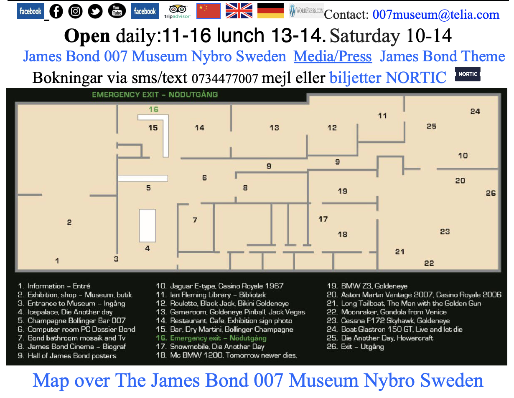
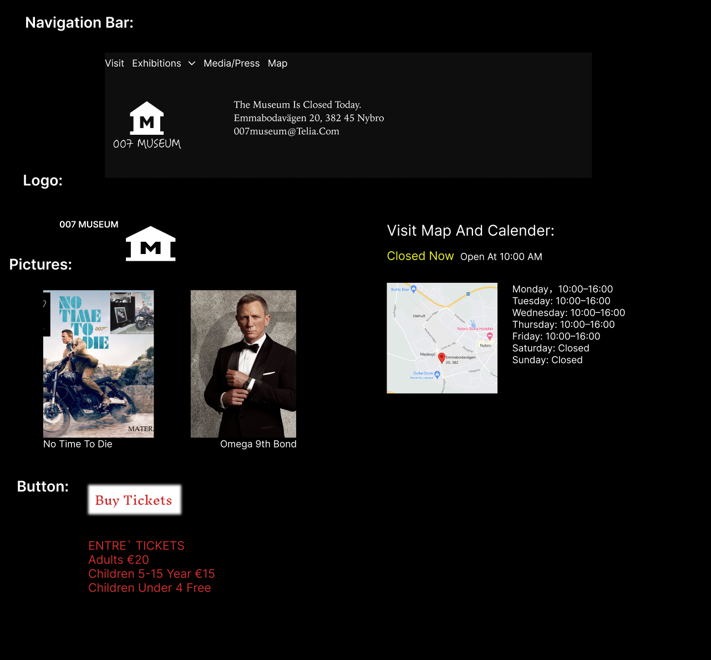

💙💙💙Redesign for 007 museum💙💙💙
a. Selection of website.

-
b. link: http://www.007museum.com/
-
c. Description: It is a website target at fans of Jame Bond. It is the website for Jame Bond museum. I choose this website because it has a good idea and bad page design. It needs redesign to attract more users.
-
d. Usability problems
-
Usability problems:
- The website has bad clarity. It is hard to capture the main point from the display. There are many high contrast pictures which distract attention. Users should be able achieve their goal when entering your design. It is hard to achieve any goal in this website because it will cost much more time to find what users come for.
- The website is too ugly to be credible. Users would not trust the website much and if they don't trust the website is not usable.
-
Learnability problems:
- Users need to take a long time to learn about the website when first use it. The homepage is extremely long but there is no button to go back to the top from anywhere. The buttons and pictures are particularly confusing. It is hard to recognize the function of each button. It is also difficult to find task button.
-
Memorability problems:
- The memorability is also bad. The website is hard to use, hard to learn and hard to remember after a certain time.
-
conceptual model:
- The website is a website for the largest James Bond museum in the world. Users should be able to clearly see the schedule of the museum. They should be able to capture the information they want. They should be able to search for information they want. They should be able to go back after scrolling or entering a subtitle page. Target users should be fans of James Bond. The main use of this website should be to provide users a general idea about the content of the museum. Users should also be able to buy tickers or related products easily on the website.
-
e. Accessbility tests and findings.
- There are many image links without alternative text, which makes links empty links. Users will see no information from the links.
- There are many images without alternative texts, making the content of the images unavailable.
- There are texts with very low contrast with the background, which are difficult to read for low vision readers.
- The web aim wave tool says that there are many images with too long alternative text. I think that is the reason why the pictures are listed so unclearly. The description words are so long that people do not know whether to focus on the picture or the description. As the tool indicated, if the image is not very complex, long alternative texts are usually extraneous.
- There are also many redundant links which direct to the same website. It will confuse users a lot since people would assume that a link should go to other target places. The redundant links make the website harder to understand.
- There are headings that do not use heading element. The display will be unclear for users. The information and function would be unavailable for users.
f. visual components.

g. wireframes
h. hifi_prototypes
i. responsive page link: https://sleepysealion99.github.io/007museum/